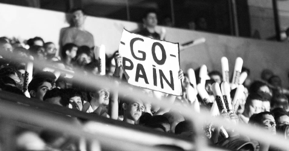
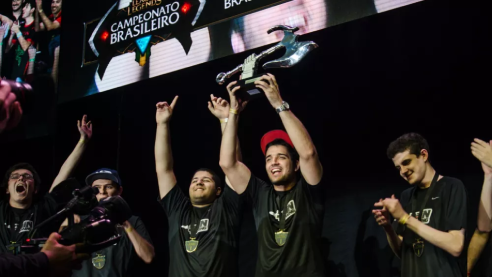
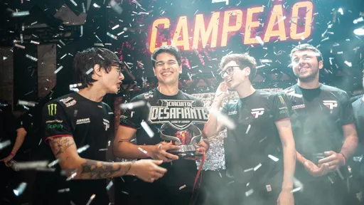

Nossa História
O Ínicio
Uma das organizações brasileiras pioneiras na profissionalização do eSports e uma das maiores organizações de eSports da América Latina e do Brasil, a paiN Gaming. Criada em 2010 pelo ex-jogador Arthur "PAADA" Zarzur, a paiN foi, inicialmente, uma organização com apenas uma equipe em DOTA e DOTA 2. A equipe, que já tinha um certo destaque no cenário de DOTA e DOTA 2, foi ficar bem mais conhecida e ter mais destaque, quando se lançou no então novo cenário competitivo do jogo “League of Legends" (ou só lol para os mais íntimos). A paiN se lançou no cenário competitivo de LOL, no início de 2012, quando tudo era mato. Sua line em 2012 era composta pelos jogadores Lucas "MrFrango" Becker (Top), César "jUc" Barbosa (Jungler), Gabriel "Kami" Bohm (Mid), André "Manalol" Rocha (ADC) e Gabriel "MiT" Souza (Suporte). Essa line ficou na 3º posição no extinto torneio IEM Global Challenge 2012 edição de São Paulo (campanha que é até hoje a segunda melhor de times brasileiros em torneios internacionais de LOL). Depois da excelente campanha no IEM Global Challenge 2012 a paiN decidiu fazer algumas trocas na line-up e Felipe "brTT" Gonçalves (ADC), Taylo "Tittu" dos Santos (Top) e Thúlio "SirT" Carlos (Jungler) entraram no lugar do “MrFrango”, “jUc” e “Manalol”. Ainda no ano de 2012 essa line-up conquistou a 3º colocação no CBLOL 2012 (Campeonato Brasileiro de League of Legends) e a classificação para o IEM Hanover 2013.
Primeira Vez
Logo após o IEM Hanover 2013, a paiN decidiu fazer uma nova mudança na line-up, desta vez a troca foi no suporte e no top, onde saia os players “MiT” e “Tittu” e entravam Martin "Espeon" Gonçalves e Fábio "Venon" Guimarães, respectivamente, em seus lugares, esse era o ínicio da glória. Naquele ano de 2013, conquistamos o CBLOL 2013 e um segundo lugar no primeiro evento Internacional WildCard. Esse foi o ínico do que viria a ser uma das maiores organizações da Ámerica Latina.
Bicampeão
Após um ano de 2014 bem ruim e instável com a saída de “Brtt” e chegada de coreanos. 2015 se iniciou com a volta de BRTT e MiT, mas dessa vez como coach. A grande surpresa da temporada foi a contratação do francês Hugo "Dioud" Padioleau. A line-up ficou assim: Tittu (Top), SirT (Jungler), Kami (Mid), BRTT (ADC), Dioud (Suporte) e MiT como treinador. Na primeira etapa do CBLOL 2015 ficamos na terceira colocação após a derrota para INTZ e a vitória em cima da Kabum Black. A segunda etapa teve iníco com a troca de jogadores onde saía o top laner Tittu e chegava Matheus "Mylon" Borges. Nesse ano ganhamos o CBLOL pela segunda vez e conseguimos, por consequência, a classificação para o mundial daquele ano. No mundial tivemos a melhor campanha de uma equipe brasileira em um campeonato internacional da Riot Games (dona e fundadora do LOL). Essa line ficou e ficará para sempre marcada como uma das melhores e mais icónicas lines de os tempos do cenário brasileiro de League of Legends.

Momentos Inesperados
Após um ano de 2016 extremamente ruim, com idas e vindas de jogadores, a paiN tinha para o ano de 2017 novos jogadores, que eram o suporte Caio "Loop" Almeida e o ADC Pedro "Matsukaze" Gama. Na primeira etapa do CBLOL conseguimos um excelente e inesperado resultado chegando a semifinal contra a Red Canids, mas infelizmente perdemos e fomos eliminados. No segundo split a história não foi muito diferente do primeiro. Tivemos algumas saídas muito importantes, como o MiT e o SirT, que atuava desde 2012 com a equipe, os substitutos deles foram jUc (Técnico) e tay (Jungler), que já havia passado pela paiN em 2016, mas como suporte. Sem grandes atuações conseguimos classificar de forma surpreendente para a grande final, novamente saímos derrotados, mas dessa vez foi para a equipe da Team One. Ao final da temporada, o top laner Mylon anunciou sua aposentadoria, surpreendendo a todos e se fixando como grande ídolo na história da paiN Gaming. Para o lugar de Mylon foi chamado Murilo “Takeshi” Alves.
O Rebaixamento e o Retorno à Elite
Em 2018 o grande jogador e ídolo Kami anunciou uma pausa em sua carreira sendo substituído por Thiago “TinOwns” Sartori. No primeiro split do CBLOL ficamos na última posição e fomos rebaixados para a Liga Desafiante. Depois do rebaixamento tivemos grandes mudanças na line-up, com as saídas de Takeshi e Tay chegaram Marcelo “Ayel” Mello (Top) e Calor “Nappon” Rucker (Jungler) e também o suporte Dioud. A equipe esperava que conseguiria a classificação e retorno para a elite naquele mesmo ano de 2018, até chegamos à final, mas perdemos por 3x1 para Redemption Gaming e acabamos sendo obrigados a jogar uma partida de promoção contra a INTZ onde acabamos perdendo por 3x1. Em 2019 com a chegada do jogador Gustavo "Minerva" Queiroz a paiN conseguiu chegar a final e ganhar da equipe da Team One, conseguindo assim o seu tão sonhado retorno à elite do LOL brasileiro.
Reencontrado as Glórias
Depois de voltarmos a elite em 2019, não tivemos um bom split e nos mantemos entre os times médios na tabela do CBLOL, mas em 2020 o ADC e ídolo BRTT voltou para a equipe. No primeiro split de 2020 não fomos muito bem, conseguimos apenas 10 vitórias
e 11 derrotas e ficamos em 6º lugar.
No segundo split tudo foi diferente, conseguimos 14 vitórias, fomos aos playoffs, chegamos a grande final, mas acabamos perdendo para a nossa grande e falida rival INTZ. Apos grandes decepções chegamos em 2021, com uma line-up que
contava com o jovem e promissor jungler Marcos ''CarioK'' Oliveira, Leonardo ''Robo'' Souza (Top), Thiago ''tinowns'' Sartori (Mid), Felipe ''brTT'' Gonçalves (ADC), Han "Luci" Chang-hoon (Suporte). Conseguimos nos classificar para os playoffs
em 6º e logo no primeiro jogo dos playoff conseguimos ganhar da LOUD kkkkkkkkkkkk no primeiro “Reverse-Sweep” da história do CBLOL, depois disso passamos pela equipe do Flamengo na semifinal, ganhamos da Vorax por 3x1 na final e
finalmente depois de 5 anos fomos campeões do CBLOL novamente.
Ué?? Só existe paiN Gaming no LOL?
Então, sim e não. A paiN foi criada no DOTA, se desenvolveu no lol, mas com o passar do tempo ela apostou e foi campeã em muitos jogos.
Dota e Dota 2
No Dota a equipe conseguiu títulos nacionais como Liga Nacional de Dota, a Masters Series de Curitiba e a SGL Cup. Teve entre seus jogadores o jogador que viria a ser um grande ídolo da organização no LOL, BrTT. Já no DOTA 2 a equipe é o time brasileiro que mais conquistou campeonatos nacionais, apesar de ter deixado o cenário de DOTA 2 há um tempinho. Conquistou 3 edições seguidas da Brasil Game Cup, a X5 Mega Arena de 2014 e 2015 e o primeiro split da Xtreme League 2015, conseguiu ir para o The International (mundial e DOTA 2) além de muitos outros resultados expressivos em campeonatos internacionais.
Free-Fire
Anunciou sua entrada no cenário do jogo em 2019, com uma line que contava com Denis "Geerty" Otavio, Arthur "D3" Caldas, Matheus "Black00" Souza e André "DECO" Elias. Acumulamos resultados muito bons no Free-Fire, como
- 12º lugar no Grupo de Acesso para a LBFF 7 (2021)
- 10º lugar na sexta temporada da Liga Brasileira de Free Fire: Série B (2021)
- 12º lugar no Grupo de Acesso para a LBFF 6 (2021)
- 16º lugar na quinta temporada da Liga Brasileira de Free Fire: Série A (2021)
- 3º lugar no Grupo de Acesso para a LBFF 5 (2021)
- 14º lugar na quarta temporada da Liga Brasileira de Free Fire: Série A (2021)
- 4º lugar na Free Fire Continental Series 2020: Américas (2020)
- 4º lugar na terceira temporada da Liga Brasileira de Free Fire: Série A (2020)
- 3º lugar na Gigantes Free Fire (2020)
- 2º lugar na C.O.P.A. Free Fire (2020)
- 4º lugar na primeira temporada da Liga Brasileira de Free Fire: Série A (2020)
- 9º lugar na Copa América 2020 (2020)
- 3º lugar na terceira temporada da Free Fire Pro League Brasil (2019)
CroosFire
A equipe começou a atuar no CroosFire em 2012, ano em que foi campeã Brasileira e foi a primeira equipe brasileira a disputar a fase final do World Cyber Games de CroosFire. Fato curioso é que a paiN teve em sua equipe o jogador Gabriel "FalleN" Toledo, que é um dos grandes jogadores de CS:GO no mundo. A equipe se retirou do CroosFire em 2016, após desentendimentos com a Z8 GAMES publisher do jogo.

CS:GO
A entrada mais recente da paiN em um jogo é no CS:GO. A equipe apesar de ser nova no jogo já coleciona excelentes resultados como: Campeão da Blast American Spring ShowDown 2022, múltipla campeã da Esea Cash Cup, uma vez campeã da Drean Hack January, dua vezes campeã da Gamers Club Masters, uma vez campeã do Clutch Circuit além de já ter representado o Brasil no Major (Mundial). A equipe conta com a seguinte line: Gabriel “nython” Lino, Vinicios “PKL” Coelho, Gabriel “NEKIZ” Schenato, Wesley “hardzao” Lopes e Rodrigo “biguzera” Bittencourt.

É isso! Essa é história da GIGANTESCA paiN gaming, espero que goste e torça para nós.